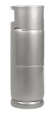

LINO GÁS
Foco na Segurança e paixão por Qualidade.
Há 20 anos atendendo Joinville com qualidade e agilidade.
PEÇA SEU GÁS
Nossos produtos
Trabalhamos com entrega de gás e agua mineral, conheça nossos produtos:
-
ÁGUA MINERAL
20 Litros
Muito utilizado em residências, escritórios, comércios e estabelecimentos industriais. Sua capacidade oferece uma boa autonomia, sendo ideal para abastecer bebedouros e suportes próprios
R$50
-
BOTIJÃO DE GÁS
13kg
Mais utilizado em residências, ideal para uso em cozinhas domésticas, alimentando fogões e fornos de pequeno a médio porte. Sua capacidade atende à demanda de uma família média, sendo prático e fácil de manusear.
R$120
-

BOTIJÃO DE GÁS
20 kg
Comum em estabelecimentos comerciais de pequeno porte, como padarias, lanchonetes e restaurantes menores. Sua maior capacidade em relação ao botijão de 13 kg garante mais autonomia sem comprometer muito o espaço.
R$300
-

BOTIJÃO DE GÁS
45 kg
Usado em grandes cozinhas industriais, restaurantes de grande porte e em estabelecimentos que demandam um uso constante e intenso de gás. É ideal para locais que necessitam de maior capacidade, reduzindo a frequência de trocas e garantindo eficiência no fornecimento de gás.
R$500